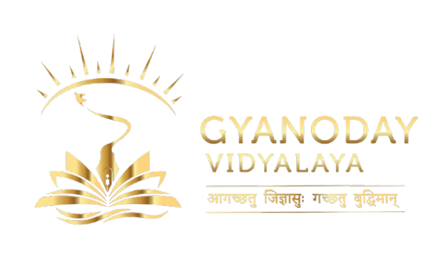
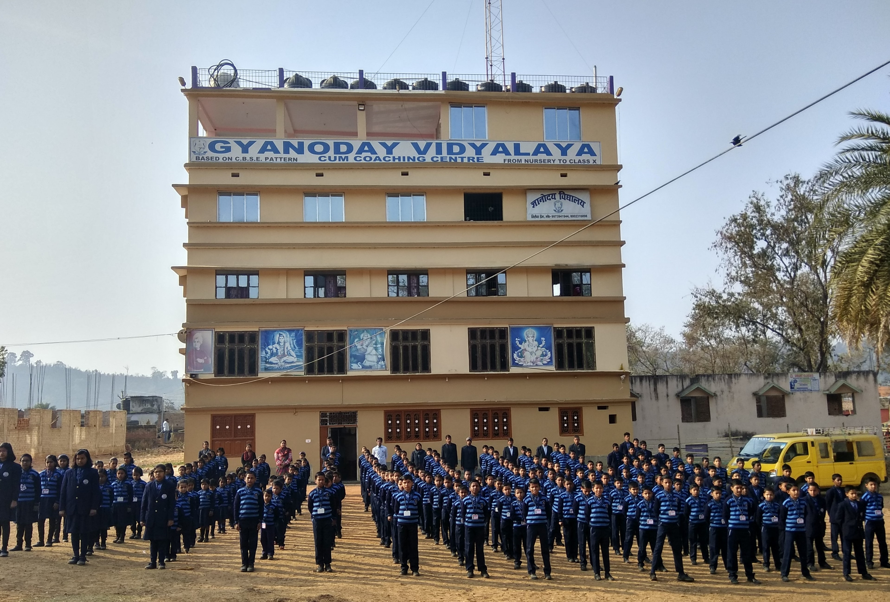
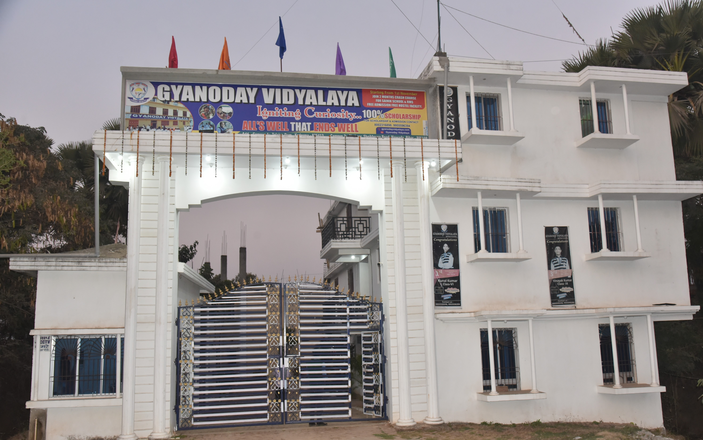
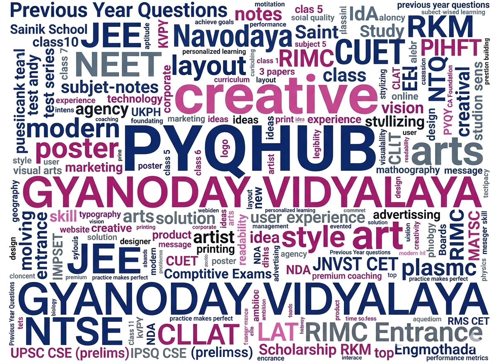

GYANODAY VIDYALAYA - Telaiya Dam
A co-educational school. It prepares students for entrance exams like Sainik School, Navodaya, and RIMC. Located near Tilaiya Dam Road (825413), it features hostels, libraries, and sports facilities.
Visit Telaiya Dam
GYANODAY VIDYALAYA - Tilak Nagar, Shahpur
A CBSE-affiliated (Affiation no.- 331280) English medium school dedicated to fostering holistic education, nurturing individual potential, and building confident, independent leaders through a, caring environment. It prepares students for IIT JEE, NEET, Olympiads and other exams.
Visit Tilak Nagar
Previous Year Questions (PYQ)
Last 5 years PYQs for Sainik School, RIMC, RMS, Navodaya, Olympiads, JEE, NEET, CUET, Netherhat, Simultala & more. Class 5-12 competitive exams.
Access PYQs